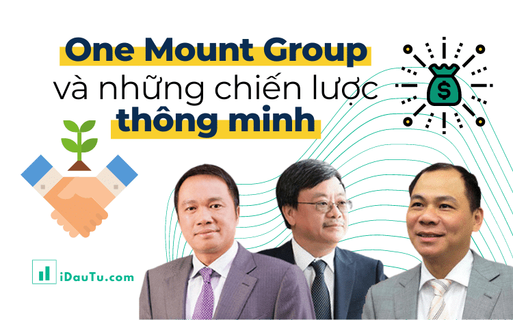

Cuối năm 2019, công ty cổ phần "
One Mount Group
" được thành lập. Ban đầu, công ty gây được sự chú ý với công chúng vì có “ông lớn” – tập đoàn Vingroup là một
trong những cổ đông sáng lập.
Được biết, One Mount Group được lấy cảm hứng từ câu thành ngữ “ba cây chụm lại nên hòn núi cao”. Cụm từ chính là
đại diện cho hình ảnh của cái bắt tay giữa Vingroup (đa ngành định hướng công nghệ, công nghiệp) – Masan (hàng
tiêu dùng) và Techcombank (ngân hàng) với có thể tạo ra một thứ gì đó lớn lao, như ngọn núi vậy.